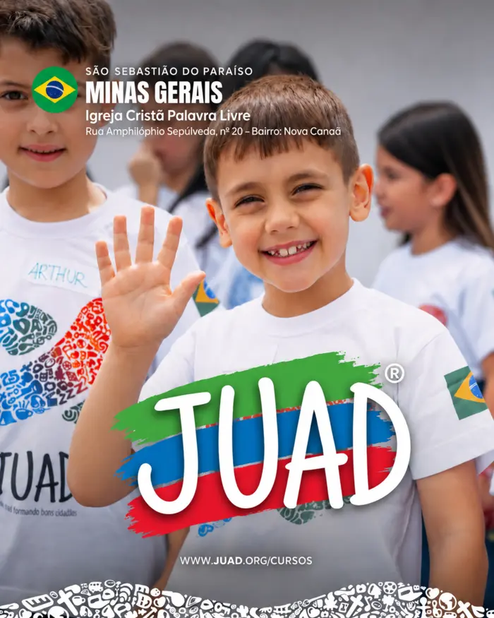
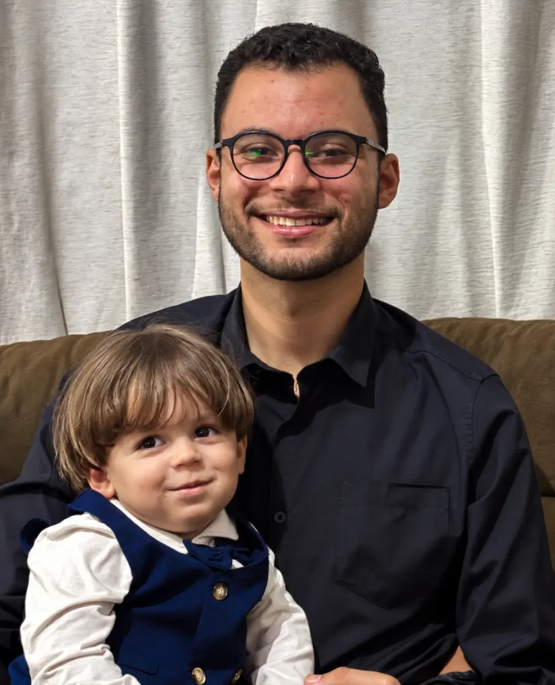
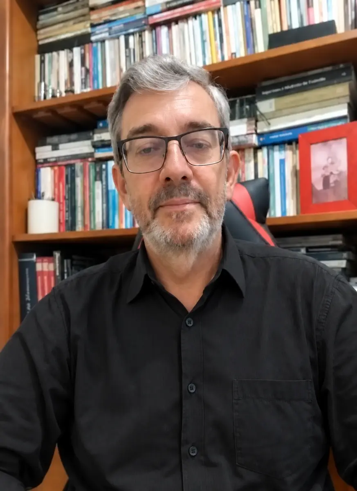
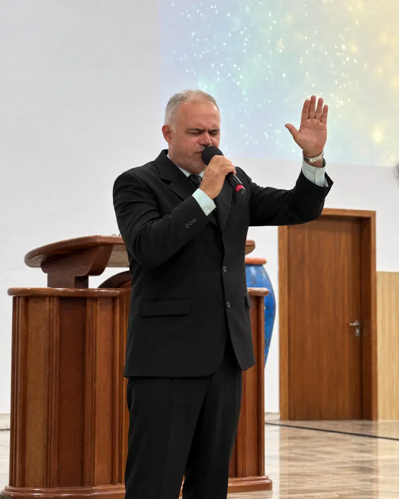
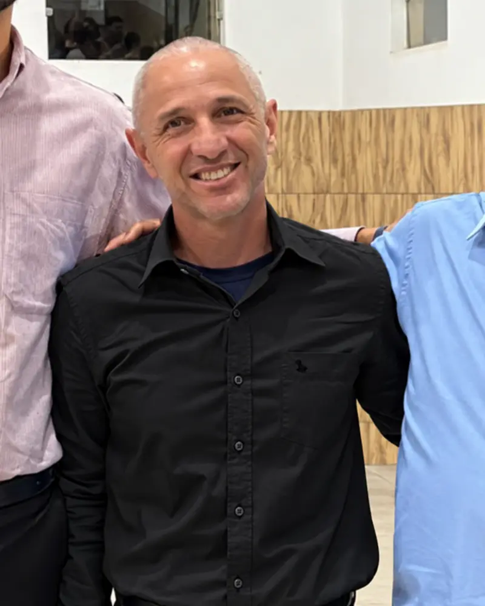

Missão
Ser uma igreja fiel às Escrituras, que vive com alegria a comunhão, anuncia com paixão o evangelho e forma discípulos que vivem a Palavra, para a glória de Deus.
Igreja Cristã Palavra Viva · Desde 2004
Fundamentada nas Escrituras, centrada em Cristo e comprometida em viver e comunicar o evangelho ao nosso tempo.
Próximos eventos↗“Porque a palavra de Deus é viva e eficaz.”
Quem somos
A Igreja Cristã Palavra Viva é uma comunidade comprometida com o evangelho de Jesus Cristo e profundamente vinculada às Sagradas Escrituras.
Desde 2004, buscamos ser uma igreja que adora com reverência, leva a formação cristã a sério e acolhe pessoas com amor, simplicidade e alegria.
“Nossa prioridade é a fidelidade, não o espetáculo.”
Nossa direção
A Palavra de Deus orienta nossa adoração, ensino, comunhão e missão.
Ser uma igreja fiel às Escrituras, que vive com alegria a comunhão, anuncia com paixão o evangelho e forma discípulos que vivem a Palavra, para a glória de Deus.
Ser reconhecida pela fidelidade às Escrituras, pela formação de cristãos maduros, pela alegria da comunhão e pela paixão em alcançar pessoas para Cristo.
Bíblica, acolhedora, familiar, alegre, reverente, acessível, contemporânea e sincera.
Nossos valores
Fundamento e autoridade para nossa fé, doutrina e prática.
Dependência de Deus e busca constante por Sua direção.
Consagração e reconhecimento de que nossa suficiência vem de Deus.
Conhecimento, reflexão e crescimento na fé cristã.
A graça de Deus vivida na comunhão e na esperança em Cristo.
Acolhimento, serviço, cuidado mútuo e relacionamentos verdadeiros.
Paixão por anunciar o evangelho de Jesus Cristo.
Agenda semanal
Participe dos nossos encontros de oração, ensino, comunhão e celebração.
Formação e ministérios
Iniciativas que fortalecem a fé, a comunhão e o serviço cristão.

Formação de crianças, adolescentes e jovens, ensinando fé, conduta cristã e valores que contribuem para a formação de bons cidadãos.
Uma atividade dedicada ao crescimento, fortalecimento e cuidado de mulheres.
Cuidado e ensino bíblico para as crianças.
Adoração congregacional a serviço da igreja.
Formação sólida e aplicação prática das Escrituras.
Comunhão, intercessão e dependência de Deus.
Aprendizado bíblico para uma fé madura.
Desenvolvimento de líderes que servem com fidelidade.
Liderança pastoral
Uma liderança dedicada ao ensino da Palavra, ao cuidado das pessoas e à missão da igreja.




Pedido de oração
Se você precisa de oração, compartilhe seu pedido conosco. Nossa comunidade valoriza o cuidado, a comunhão e a intercessão.
Enviar pedido pelo Instagram ↗“Em tudo, pela oração e súplicas, e com ação de graças, apresentem seus pedidos a Deus.”
Onde estamos